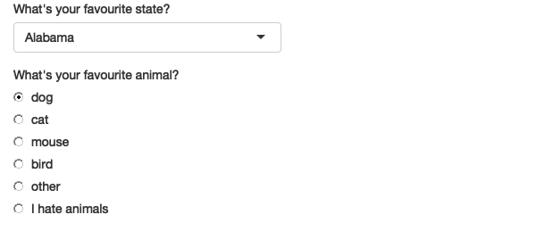

Chapter 1：一个简单的例子
library(shiny)
ui <- fluidPage(
selectInput("dataset", label = "Dataset", choices = ls("package:datasets")),
verbatimTextOutput("summary"),
tableOutput("table")
)
server <- function(input, output, session) {
output$summary <- renderPrint({
dataset <- get(input$dataset, "package:datasets")
summary(dataset)
})
output$table <- renderTable({
dataset <- get(input$dataset, "package:datasets")
dataset
})
}
shinyApp(ui, server)Shiny app有两部分：用户交互脚本ui、服务器脚本server。
Notes:
1、fluidPage() 是一个布局函数，用于设置页面的基本视觉结构。它将展示一个自动调整组件尺寸大小来适应浏览器。
2、selectInput() 是一个输入控件，它允许用户通过提供一个值来与应用程序进行交互。在这种情况下，它是一个带有“数据集”标签的选择框，可让您选择 R 附带的内置数据集之一。
3、verbatimTextOutput() 和 tableOutput() 是输出控件，它们告诉 Shiny 将渲染输出放在哪里（我们稍后会介绍如何）。 verbatimTextOutput() 显示代码，tableOutput() 显示表格。
以上为写一个脚本的简单例子，但一般而言把ui与server分别放在不同的脚本比较好，以下给出建立步骤：
建立一个shiny app：
1、为app创建一个文件夹.
2、app’s server.R and ui.R 脚本放在文件夹之下
3、启动app runApp 或者 RStudio的启动按钮
4、退出app.
Example:
(1) ui.R
library(shiny)
# Define UI for application that draws a histogram
shinyUI(fluidPage(
# Application title
titlePanel("Hello Shiny!"),
# Sidebar with a slider input for the number of bins
sidebarLayout(
sidebarPanel(
sliderInput("bins",
"Number of bins:",
min = 1,
max = 50,
value = 30)
),
# Show a plot of the generated distribution
mainPanel(
plotOutput("distPlot")
)
)
))(2)server.R
library(shiny)
# Define server logic required to draw a histogram
shinyServer(function(input, output) {
# Expression that generates a histogram. The expression is
# wrapped in a call to renderPlot to indicate that:
#
# 1) It is "reactive" and therefore should re-execute automatically
# when inputs change
# 2) Its output type is a plot
output$distPlot <- renderPlot({
x <- faithful[, 2] # Old Faithful Geyser data
bins <- seq(min(x), max(x), length.out = input$bins + 1)
# draw the histogram with the specified number of bins
hist(x, breaks = bins, col = 'darkgray', border = 'white')
})
})UI常用的一个布局：
library(shiny)
shinyUI(fluidPage(
titlePanel("title"),
sidebarLayout(
sidebarPanel("title"),
mainPanel("title")
)
)
)Tips:在带有Panel的函数中可以用Html5语言书写，用以编辑页面的布局。例如：
# ui.R
shinyUI(fluidPage(
titlePanel("My Shiny App"),
sidebarLayout(
sidebarPanel(),
mainPanel(
h6("Episode IV", align = "center"),
h6("A NEW HOPE", align = "center"),
h5("It is a period of civil war.", align = "center"),
h4("Rebel spaceships, striking", align = "center"),
h3("from a hidden base, have won", align = "center"),
h2("their first victory against the", align = "center"),
h1("evil Galactic Empire.")
)
)
))以上是标题的演示，此外还有p()创建段落，strong()加粗，em()斜体，code()代码块，br()下一行等等。
插入图片可以用img函数，img函数通过特殊处理才能找到图片，图片文件必须在www文件在下，www文件和 ui.R 脚本同路径：
img(src = "my_image.png", height = 72, width = 72)
应用参考：
shinyUI(fluidPage(
titlePanel("My Shiny App"),
sidebarLayout(
sidebarPanel(
h2("Installation"),
p("Shiny is available on CRAN, so you can install it in the usual way from your R console:"),
code('install.packages("shiny")'),
br(),
br(),
br(),
br(),
img(src = "bigorb.png", height = 72, width = 72),
"shiny is a product of ",
span("RStudio", style = "color:blue")
),
mainPanel(
h1("Introducing Shiny"),
p("Shiny is a new package from RStudio that makes it ",
em("incredibly easy"),
" to build interactive web applications with R."),
br(),
p("For an introduction and live examples, visit the ",
a("Shiny homepage.",
href = "http://www.rstudio.com/shiny")),
br(),
h2("Features"),
p("* Build useful web applications with only a few lines of code—no JavaScript required."),
p("* Shiny applications are automatically “live”.. in the same way that ",
strong("spreadsheets"),
" are live. Outputs change instantly as users modify inputs, without requiring a reload of the browser.")
)
)
))Chapter 2: The UI
Input function: 1. sliderInput()
#条状数字输入
sliderInput("min", "Limit (minimum)", value = 50, min = 0, max = 100)2.selectInput()
animals <- c("dog", "cat", "mouse", "bird", "other", "I hate animals")
ui <- fluidPage(
selectInput("state", "What's your favourite state?", state.name,multiple = TRUE),#可以多选
radioButtons("animal", "What's your favourite animal?", animals)
) 3.textInput()
#写在fluidpage的括号内，第一个为变量名，第二个为标题
textInput("name", "What's your name?"),#文本输入
passwordInput("password", "What's your password?"),#密码类文本输入
textAreaInput("story", "Tell me about yourself", rows = 3)#自由输入4.numericInput()
#数字输入或区间输入
numericInput("num", "Number one", value = 0, min = 0, max = 100),
sliderInput("num2", "Number two", value = 50, min = 0, max = 100),
sliderInput("rng", "Range", value = c(10, 20), min = 0, max = 100)5.dateInput()
#日期输入
dateInput("dob", "When were you born?"),
dateRangeInput("holiday", "When do you want to go on vacation next?")6.checkboxGroupInput/checkboxInput
#多选
checkboxGroupInput("animal", "What animals do you like?", animals)
#单选
checkboxInput("cleanup", "Clean up?", value = TRUE),#表示已选上
checkboxInput("shutdown", "Shutdown?")7.fileInput
#这是UI端的代码，该函数需要server端的特殊处理
fileInput("upload", NULL)8.actionButton